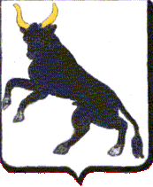

retour à la famille Brébeuf

DOCUMENTS DIVERS PUBLIÉS
JEUNES FILLES de LA MAISON de SAINT-CYR
Référence : Jeunes filles normandes nobles ayant appartenu à la Maison de Saint-Cyr ; C. Lebrument ; Revue Généalogique Normande n°77 janvier/mars 2001 ; p.28-35
d'après Les demoiselles de Saint-Cyr, maison royale d'éducation, 1686-1793, catalogue d'exposition à la grande Ecurie du roi à Versailles. Archives Départementales des Yvelines, Somogy, éditions d'art, Paris 1999
Geneviève Camille Suzanne de BREBEUF née le 04-01-1761 à Coutances, paroisse Saint-Nicolas
Référence : La vie médicale à Saint-Lô, dans Notices,
Mémoires et Documents , t.41, 1929
Provenance : Archives Départementales de Saint-Lô
Jean GUERARD, décédé le 01-12-1621, bourgeois de Saint-Lô, barbier chirurgien. Il devait être veuf de Françoise LEBASTARD veuve en premières noces de noble homme Gilles de BREBOEUF dont elle avait deux enfants Jean et Gilles de BREBOEUF. Ceci résulte du partage d'une maison acquise en 1594.
"Du xxiii décembre 1594 Me Marin GUERARD bourgeois de Thorigny vend à son fils Jean lui aussi chirurgien bourgeois de St Lô une maison sise en l'enclos..."
Le 30 may 1606 eut donc lieu le partage de la susdite maison à cause des mineurs Jean et Gilles de BREBEUF puisqu'elle avait été acquise pendant le mariage d'entre Jean GUERARD et Françoise LEBASTARD.
Référence : "Contribution à l'étude de la population en
Normandie au bas moyen-âge (XIVe-XVIe siècles). Inventaire des rôles de fouage et
d'aide". Cahiers Léopold Delisle. Michel NORTIER
Provenance : Archives Départementales de Saint-Lô
Quatrième série : Rôles de fouage paroissiaux de 1461 à 1497 ; tome XXV 1976
Condé-sur-Vire
Fouage pour 1485 : 155 feux - 3 nobles (Jehan de Brébeuf, et Jehan et Robert Le Champion, écuyers) - 3 non payants - 12 prévôts - 4 meuniers - 44 pauvres ; B.N. ms franç 25920 n°193
Fouage pour 1491 : 150 feux - 5 nobles (Jehan de Brébeuf, sieur de Brébeuf, Robert Le Campion, Thomas Blanvillain et Pierre Banville, écuyers ; Jehanne veuve de Jehan Le Champion écuyer) - 17 exempts - 37 pauvres ; B.N. ms franç 25922 n°609
Fouage pour 1494 : 165 feux - 5 nobles (4 écuyers : Jehan de Brébeuf, sieur de Brébeuf, Thomas Blanvillain, Robert Le Campion et Perrin de Banville ; Jehanne veuve de Jehan Le Champion écuyer) - 10 exempts - 43 pauvres ; B.N. ms franç 25923 n°758
Sixième série : Rôles de 1518 à 1533 ; t. XXXIX 1990
Condé-sur-Vire
Fouage pour 1518 : 90 feux, 4 nobles, écuyers (Jeh. de Bresbeuf sieur du lieu ; Robert ou Robot Le Champion sieur de la Corbellière ; Robert Pitercy sieur de la Carbonnière ; Pierre de Banville, sieur du Bucq ) - 14 exempts - 70 pauvres ; B.N. ms franç 25931 n°233 (tabellionnage de Briquessart)
DOCUMENTS MANUSCRITS de la BIBLIOTHEQUE NATIONALE
Référence :Documents
manuscrits de la bibliothèque nationale de France concernant
Saint-Lô, spécialement au XVe siècle, Michel
Nortier dans Revue de la Manche, tome 52, fascicule 207, 1er trimestre 2010,.
1416, 1er mai. Saint-Lô.
Par-devant
Colin des Gardins, clerc, tabellion commis sous Jehan Escourtemer,
tabellion à Saint-Lô, 89 bourgeois et habitants de la
ville donnent quittance à Pierre d'Espaigne, receveur au
diocèse de Coutances des aides ordonnées pour la guerrre,
de la somme de 250 livres tournois sur les 500 qu'ils avaient
prêtées au roi en 1414, par les mains de maître
robert houel, conseiller du roi et son commissaire en cette affaire,
pour les réparations de l'église Notre-Dame de
Saint-Lô (bibl. nat., ms. fr. 26041, n°5059) : est
cité parmi les 89, Philippin Brebeuf.
TROUBLES et GUERRES à CARENTAN, SAINT-LÔ en 1574
Référence : Procès verbal des troubles et guerres à Carentan, Saint-Lo en 1574, dans Notices,
Mémoires et Documents , t.9, 1890, p. 107
Provenance : Archives Départementales de Saint-Lô
Pierre Le Dragon : ce bourgeois de Saint-Lô était maître-juré du métier de chandelier (Archives de la Manche, statuts de la corporation des Chandeliers de Saint Lo, 10 juillet 1568). Olive Lair était sa femme (acte du 12 août 1539 devant Nicolas La Rose et Richard Planchon, tabel. roy. à Saint-Lo) ; de leur mariage naquirent trois filles, Gillette, Marie et Jeanne. Marie fut mariée à noble homme Gilles de Breboeuf, qui fut trouvé noble par Roissy, en 1599 (Chamillard lui donne pour époux Jean de Bréboeuf, fils de Gilles. Les lettres royaulx lui attribuent ce dernier pour mari) ; elle obtint, en 1582, des lettres royaulx autorisant sa séparation de biens d'avec son mari (acte du jeudi 1er mai 1586 devant les tabel. de Saint-Lo) ; sa soeur Jeanne épousa honorable homme Jacob Vauville, bourgeois de Saint-Lo (acte du 10 avril 1593 devant les tabel. de Saint-Lo). Pierre Le Dragon possédait, en cette ville, une "petite maison ou masure" sise dans un pâté de maisons aujourd'hui détruit, situé à l'extrémité de la descente du Grouais vers l'Ouest. Cet ensemble de constructions était compris entre la rue Torteron et "la rue tendant de la Porte-Torteron (Porte-au-Lait) pardessus Le Groix" et appelée la Rue-au-Crosnier (cette rue est incorporée à la rue Torteron)".
DONS FAITS PAR HENRI V ROI d'ANGLETERRE (1418-1420)
Référence
: Extrait du registre des dons, confiscations, maintenues ... faits
dans le duché de Normandie (1418-1420) par Henri V, roi
d'Angleterre ; Charles Vautier ; Paris, 1828,
Provenance : Google books
Référence:
Catalogue analytique des chartes, documents historiques, titres
nobiliaires, etc. composant les archives du collège
héraldique et historique de France. Deuxième partie.
Normandie ; Paris ; 1866
Provenance : Tirés à part de la bibliothèque de l'école nationale des chartes, http://bibnum.enc.sorbonne.fr
dernière modification : 2 janvier 2012